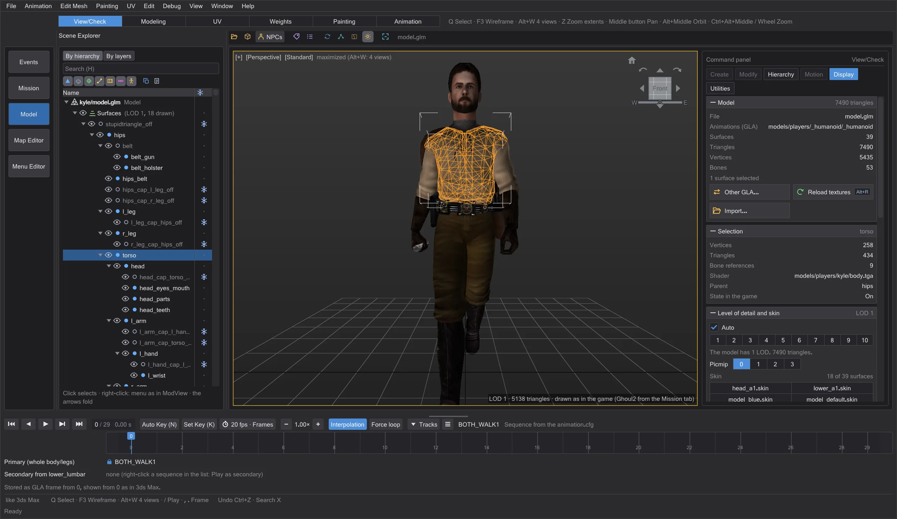
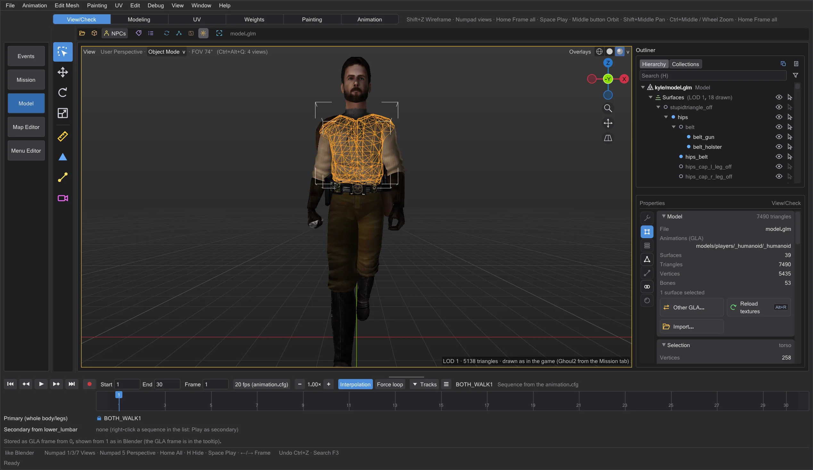
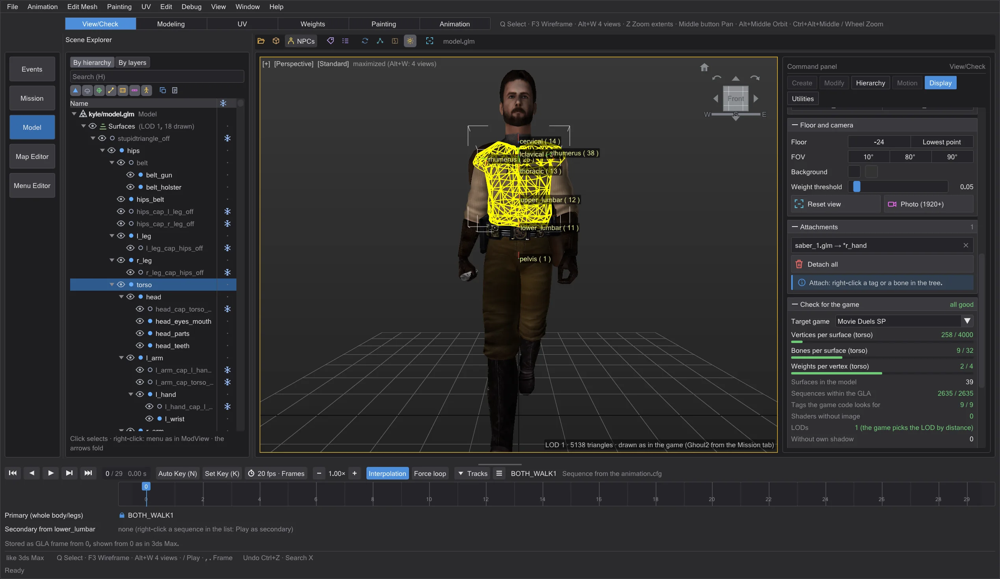

Model tab: view and check
The area View/Check is where a model opens: everything ModView can do - levels of detail, skins, attachments, floor and camera, the check against the limits of the game and scenes as ModView scripts - drawn as in the game.


The groups#
Model shows file and skeleton and opens a model with Import (from the disk or from the .pk3 of the game); Reload textures has Alt+R in both control modes - except like 3ds Max in Modelling (Alt+R selects a ring) and like Blender in Animation (Alt+R clears the rotation); there the action search shows it without the key. Selection lists the values of the selected surface, tag or bone (vertices, triangles, bone references, shader, parent, state). Level of detail and skin: all ten levels can be chosen like r_lodbias in the game - a level above the last one of the model shows the last one, and the sentence below says so; the skins stand in two columns. Floor and camera: floor at -24 or under the lowest point of the pose, field of view 10°, 80° or 90°, a plain background, the weight threshold, Reset view and Photo (1920+).
Other GLA in the group Model loads another skeleton from the game archives (GLA override, like ModView). With Auto the distance picks the level of detail as in the game (single player: radius 40, r_lodscale 10; multiplayer: radius 64, r_lodscale 5); Picmip 0 to 3 stands below the levels.

Check for the game#
Check for the game measures the selected surface (without a selection the one closest to a limit) against the target game: vertices and bones per surface, weights per vertex. Below stand Surfaces in the model, Sequences within the GLA (sequences of the animation.cfg that end after the GLA), Tags the game code looks for (the tags the player code bolts to - SP only for a standard skeleton), Shaders without image, LODs and Without own shadow: a surface with half of SHADER_MAX_VERTEXES or more vertices does not cast its own stencil shadow; the game takes the same surface of the last LOD.
The limits in numbers stand as a table below the rows: Jedi Academy and Jedi Outcast stop with an error at 1000 vertices per surface, Movie Duels at 4000; a surface refers to at most 32 bones, a vertex carries at most 4 weights, and Ghoul2 instances in this view counts against MAX_G2_MODELS (a figure with its attachments is one instance). Behind the end of the GLA a sequence shows the figure in T-pose in OpenJK-based games, the original keeps it standing.
Check displays of ModView#
All display switches of ModView stand in the menus of the header of the view (like 3ds Max [Standard] and [+] > Bones and checks, like Blender Viewport Shading and Overlays), in Search all actions and in the context menu: Alpha blending off draws everything opaque, Texture filter off shows every pixel of the textures, Bone weight threshold leaves out small weights when posing, Highlight surface (+ bone refs) outlines the selected surface in yellow and names the bones it references, Non-shadow-casting surfaces draws red dashes on surfaces without their own shadow. Like Blender Z chooses the shading and Shift+Alt+Z hides all overlays.
Scene and views#
Save scene writes model, skin, attachments, primary and secondary sequence, surfaces on and off, root, level of detail and view as a ModView script (.mvs) - ModView reads it too; Read ModView script reads such a script and names what it does not take over. Like 3ds Max the areas Modeling, Weights, Painting and Animation start with four views (Top, Front, Left, Perspective); Alt+W maximizes, and every area keeps its choice. A .glm always opens in View/Check.